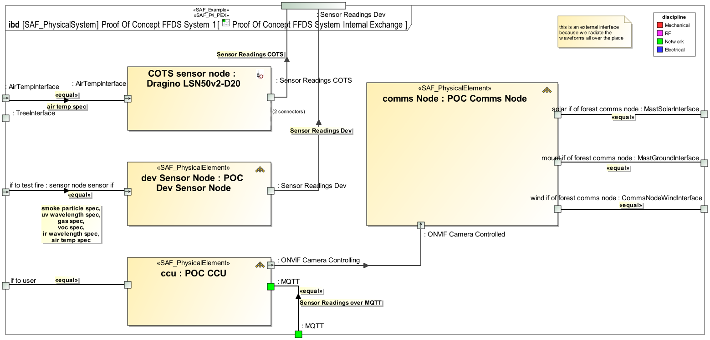

P4_PIEX Physical Internal Exchange Viewpoint
| Domain | Aspect | Maturity |
|---|---|---|
| Physical | Interaction & Collaboration |

The Physical Internal Exchange Viewpoint serves for the identification and definition of interfaces of elements of the physical system. also, the delegation of system element interfaces to the physical system boundary interfaces is covered. The Physical Internal Exchange Viewpoint
The Physical Internal Exchange Viewpoint supports the “Design Definition Process” activities of the INCOSE SYSTEMS ENGINEERING HANDBOOK 2023 [§2.3.5.5] and contributes to the artifacts “System Design Description” and “System Interface Definition”. It also supports the “Interface Management” method of the INCOSE SYSTEMS ENGINEERING HANDBOOK 2023 [§3.2.4].
One or more IBDs featuring the SOI boundary, the parts representing physical elements of the SOI. At the SOI boundary, the interfaces of the SOI represented as proxy ports. At the parts, proxy ports representing the SOI parts interfaces. Binding Connectors for each identified SOI interface delegated to physical SOI elements interfaces. connectors representing connections between interfaces of SOI parts. Item flows are defined for each planned exchange on the identified interfaces. Note: Please use more than one IBD focused on different areas of interest to keep the view comprehensive. Note: Ports may be nested to organize interfaces, but it is recommended to use only only one level.
A Table representing the content or part of the ibd content.
The following Stereotypes / Model Elements are used in the Viewpoint: